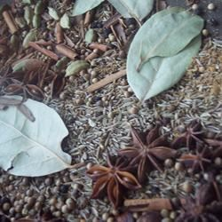

Garam Masala

Description
This is a popular spice blend used in many Indian dishes.
Ingredients
- ⅓ cup cumin seeds
- 3 tablespoons coriander seeds
- 3 (4 inch) cinnamon sticks, broken into pieces
- 5 bay leaves
- 1 teaspoon nutmeg
- 5 whole star anise pods
- 14 green cardamom pods
- 1 teaspoon whole cloves
- 1 teaspoon whole black peppercorns
- 1 teaspoon ground mace
Steps
- Toast the cumin seeds, coriander seeds, cinnamon sticks, bay leaves, nutmeg, anise pods, cardamom pods, cloves, peppercorns, and mace together in a skillet over medium heat until very fragrant and you can literally see the scent rising into the air, 8 to 12 minutes; remove from heat and allow the mixture to cool slightly, about 10 minutes.
- Pour the spice mixture into a grinder; grind into a fine powder. Store in an airtight container.